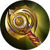
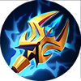
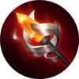
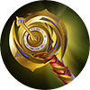
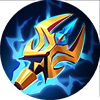
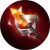
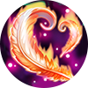
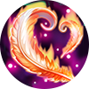

|
Сесиллион
|
|
|
Сесиллион - герой класса маг. Его особенностю является огромнейший урон в поздней игре
|
|
"Жить вечно не благословение,а проклятье"
-Сесиллион |
 |
Дата выхода: - 11 февраля 2020 года |
|
| История героя: | |
| Сесилион был оперным певцом и актером в театре замка Аберлин. Его выступления всегда привлекали множество людей, но такой успех не приносил радости герою. Все было связано с тем, что он был «Демоном Крови» и не мог воспринимать чувства людей. Насколько он помнил, он остался единственным представителем своей расы, поскольку все остальные были уничтожены. Так скрываясь, под личиной человека, он проводил свои одинокие дни. После очередного концерта, выйдя для поклона, в зале, он увидел Кармиллу. Когда их взгляды встретились, они сразу поняли, что влюбились. По мере того, как их чувства разгорались, их тайные встречи, становились все более частыми. Однако, отец Кармиллы, граф Ансаак, знал обо всем, и собирался выдать свою дочь, за более успешного человека, чем «простой» оперный актер. Понимая, что он Демон крови, а его возлюбленная человек, и узнав о том, что граф нашел «удачную партию» Сесилион решил сдаться и уйти от Кармиллы. Казалось, его существование, вернулось в те времена, когда ночи он проводил в одиночестве. Проведя так 2 ночи, он решил навестить Кармиллу. В тот момент когда он пришел к ней, он увидел холодное тело, своей возлюбленной. Разве он мог жить без своей любимой? В новолуние Сесилион расправил свои крылья и пролетел над городом, чтобы забрать свою возлюбленную. После этого, никто не видел актера и графиню, остались только легенды о возлюбленных, которых, не в силах, разлучить даже смерть. | |
Слабые и сильные стороны: Слабые:
Cильные:
Сборка героя:
 





 

Эмблемы
Выбор линии:
Так, как Сесилион - маг, в начале игры он идет на среднюю линию
Пассивное: Пробуждение крови
Увеличивает максимальную ману на 10, каждый раз когда навык героя поражает вражескую цель Урон навыков Сесилиона увеличивается в зависимости от максимальной маны.

1 Навык: Удар летучей мыши
Сесилион запускает летучую мышь в выбранную область нанося магический урон. Повреждает всех героев на пути, в конце пути наносит урон 2 раза. Навык имеет малую перезарядку, но если применять навык несколько раз подряд, будет увеличивается стоимость маны на каждое последующее использование в 2.5 раза.

2 Навык: Кровавые когти
Сесилион призывает в выбранную область пару когтей, которые стянут врагов оглушая их на 1 секунду, при этом нанося магический урон. Увеличивает скорость передвижения Сесилиона на 30% на 2 секунды

Ультимативная способность: Пир летучих мышей
Герой выпускает шары которые наносят магический урон ближайшим врагам. При попадании по врагам замедляет их на 60% на 0.25 сек. И восстанавливает небольшое количество ОЗ ( чем больше ОЗ потеряно, тем больше восстановление)

|